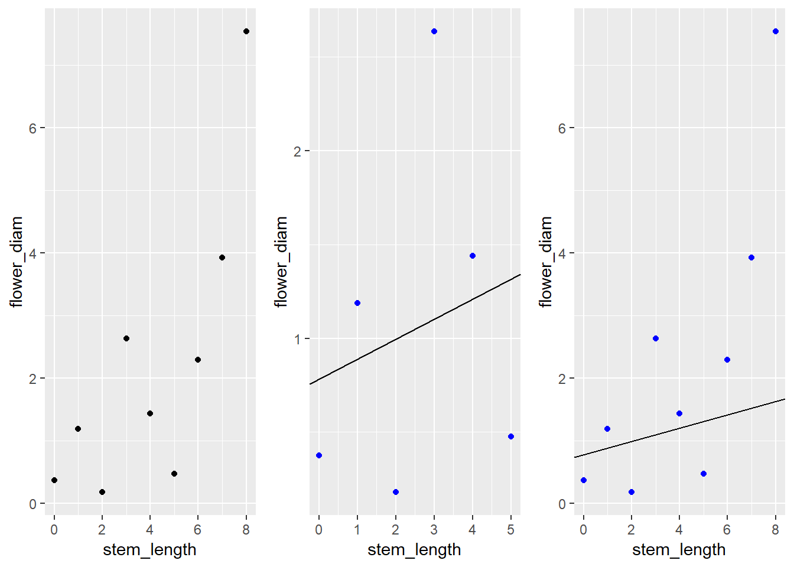

Chapter 2 Complex Surveys
2.1 Survey Statistics
Researchers in the social science and health sciences are increasingly interested in using data from complex surveys to conduct the same sorts of analyses that they traditionally conduct with more straightforward data. - Lumley 1969
The implicit pervasiveness of survey statistics in all data motivates our exploration into its significance in imputation.
Survey statistics differ from statistics modelling in the specification of the random process that generates the data. In model-based statistics, some underlying generative model from which observations are drawn is assumed to exist. By understanding or approximating this model from data, one may draw conclusions on the nature of the generative function provided no meaningful changes to the data are made.
Contrary to model-based statistics, the analysis of complex survey samples are design based. The observations from a researcher-specified population have fixed features, and randomness is introduced when these observations are drawn from the population according to some stochastic design. This random process is under the control of the researcher, and can be known precisely. The significance of design-based methods is that the probability sample design is the procedure for taking samples from a population, not just the resulting data. This is a significant departure from the statistical analysis mindset that randomness is an element of the features and labels of a population. Using this method, the features of the population from which the observations are drawn may be estimated, but these conclusions may not generalize to other populations. With understanding of the survey sampling design from which data observations arise, the researcher may make improved estimates of the population of study compared to naive estimates (Lumley, 2011).
The probability sample is the fundamental concept of design-based inference. Taking a random sample of 36,000 people from Oregon is an example of a survey design which implies independent and equal probability sampling of all humans in the state. The Law of Large Numbers is invoked to assume the distribution of sampled observations represents the population from which they are drawn according to any features of interest to the researcher, such as height, weight, or age.
This type of surveying can be complicated by adding a stratifying element, such as randomly sampling 1,000 people from each of the 36 counties of Oregon. The data created by such a design would likely not be representative of the state, since people from lower-population counties would be more likely to be sampled. However, since the probability of each person in the sample being randomly selected is known (since the population of each county is known), this is still a probability sample. The key point of this process is that a probability sample is the procedure for taking samples from a population, not a data set (Lumley, 2011).
There are four requirements for a data set to be a probability sample:
Every individual in the population must have a non-zero probability of ending up in the sample.
The probability of inclusion must be known for every individual who does end up in the sample.
Every pair of individuals in the sample must have a non-zero probability of both ending up in the sample.
The probability of every pair of individuals being included in the sample must be known for every pair of individuals in the sample.
1 and 2 are necessary in order to get valid population estimates, 3 and 4 are necessary to work out the accuracy of the estimates. If individuals were sampled independently of each other the first two properties would guarantee the last two (Lumley, 2011). Though 3 and 4 are requirements of a probability sample, they are often not included in datasets as they require an \(n \times n\) matrix of probabilities, where \(n\) is the number of observations in the data set.
The fundamental statistical idea behind all of design-based inference is that an individual sampled with a sampling probability \(\pi_i\) represents \(\frac{1}{\pi_i}\) individuals in the population. The value \(\frac{1}{\pi_i}\) is called the sampling weight (Lumley, 2011). Since observations represent different proportions of the population, the inclusion probability must be accounted for in modeling and estimation procedures.
Data collected under a complex survey design have an additional layer of complexity and are not to be treated as independent and identically distributed (i.i.d.). Ignoring this complex survey design is found to create significant error in data analyses (Toth & Eltinge, 2011). This concern motivates our exploration of accounting for survey design in neural network imputation.
2.2 Imputation
Often in real-world data, there is some degree of missingness. This can be for any number of reasons, illustrated below:
| Description | |
|---|---|
| Noncoverage | An element in the target population is not included in the survey sampling frame |
| Total Nonresponse | A sampled element does not participate in the survey |
| Item Nonresponse | A responding sampled element fails to provide acceptable responses to one or more of the survey items |
Item nonresponse is the focus of this thesis. Item nonresponse will be restricted to a response value of interest called a label and will be present in some of the observations. The other variables of the observation, called features, will be fully present. The usual form of handling item nonresponse is imputation, which fills in missing values with usable information (Brick & Kalton, 1996). Common algorithms such as Principal Component Analysis and regression require no missingness in the data set, so replacing NA values with useable information is vital for analysis.
In many statistical analyses, observations with any degree of missingness cannot be included. For example, how would one perform a linear regression with observations that have features but no label? Dropping these terms would remove potentially huge swathes of the data set, particularly in multivariate data sets, and would potentially create systematic bias.
Suppose for example a data set with information on roses had a feature with stem length and a label on flower size measured by a researcher. There might be missing values for flower size that are not randomly distributed: Before the researcher makes measurements, there has been systematic removal of the large-flowered roses by passersby. To ignore these observations would lead the analyst to draw false conclusions on the relationship of stem length to flower size, the distribution of flower sizes in the population, and estimations of the mean flower size in the population of all flowers, visualized in Example 1.1:
Attaching package: 'dplyr'The following object is masked from 'package:gridExtra':
combineThe following objects are masked from 'package:stats':
filter, lagThe following objects are masked from 'package:base':
intersect, setdiff, setequal, union
Imputation attempts to address this common dilemma in real-world data. Imputation is the process of replacing missingness in data sets with some value that redeems the observation for some degree of analysis. “The aim of these methods is to compensate for the missing data in such a manner that the analysis file may be subjected to any form of analysis without the need for further consideration of the missing data” (Brick & Kalton, 1996). Imputation assigns values to missing responses, which allows records with missingness to be retained during analysis. Ideally, imputation would eliminate bias in survey estimates caused by ignoring records with missing data. The catch is that imputation can destroy intervariable relationships, as well as overestimate the precision of survey estimates on fabricated data.
There are stochastic and deterministic methods for imputation. Deterministic regression imputation is the predicted value from a regression trained on complete-case data. Stochastic imputation differs due to an additional residual added term to the predicted value, taken either from a random respondent or comparable observation, and is usually preferred due to the importance of shape parameters in many analyses (Brick & Kalton, 1996).
One traditional method of imputation is the “Hot-Deck Method”, which was generally favorable when computation was less efficient. Hot Deck Imputation requires extensive knowledge of the survey variables in order to optimize performance since explicit model-based imputation needs a valid model for every survey variable (Maiti, Miller, & Mukhopadhyay, 2008). This thesis proposes naive artificial neural networks as a solution which requires minimal domain knowledge and resists the curse of dimensionality which other nonparametric methods are susceptible to, such as local polynomial regression (Maiti et al., 2008).
Due to the difficulties imposed by working with high-dimensional, complex survey data with varying degrees of domain knowledge, we turn to neural networks and their structural benefits to reliably perform these challenging imputation problems.